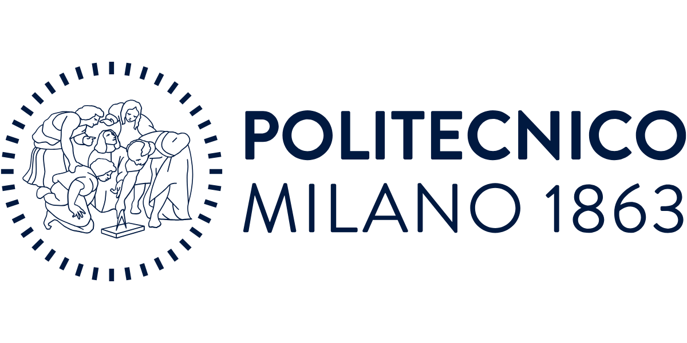
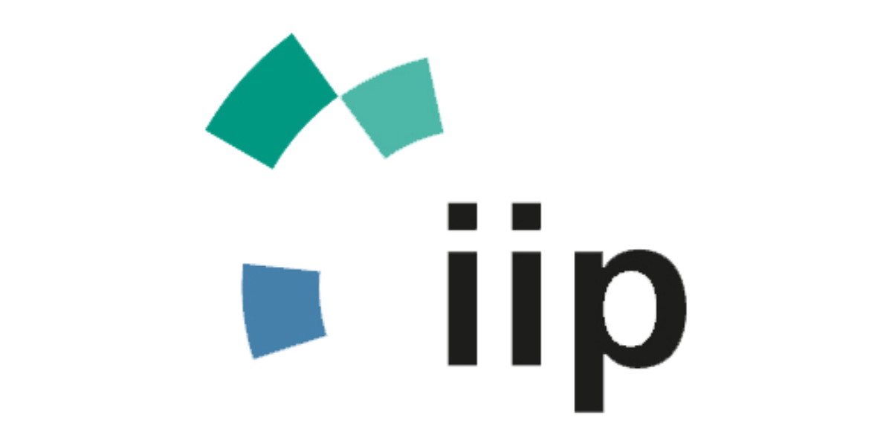
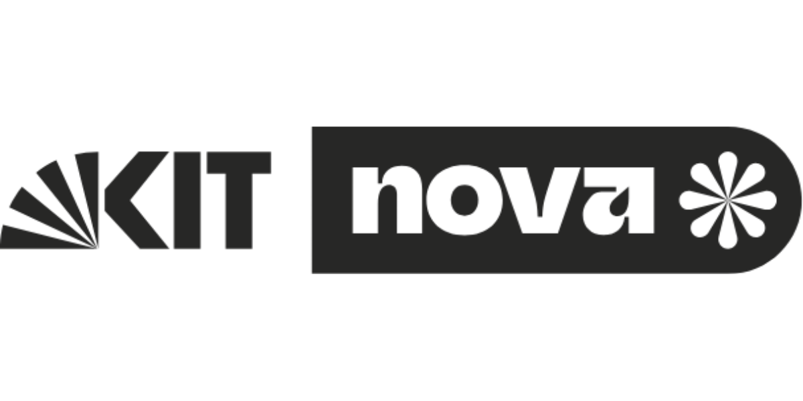
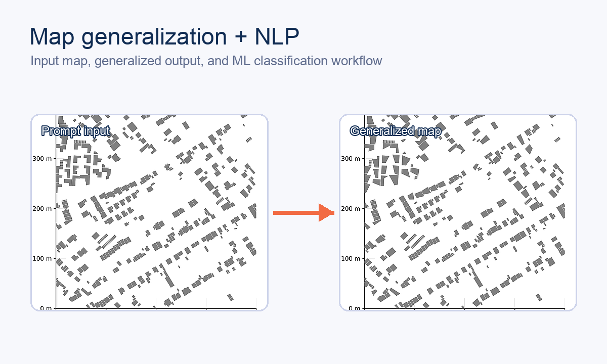
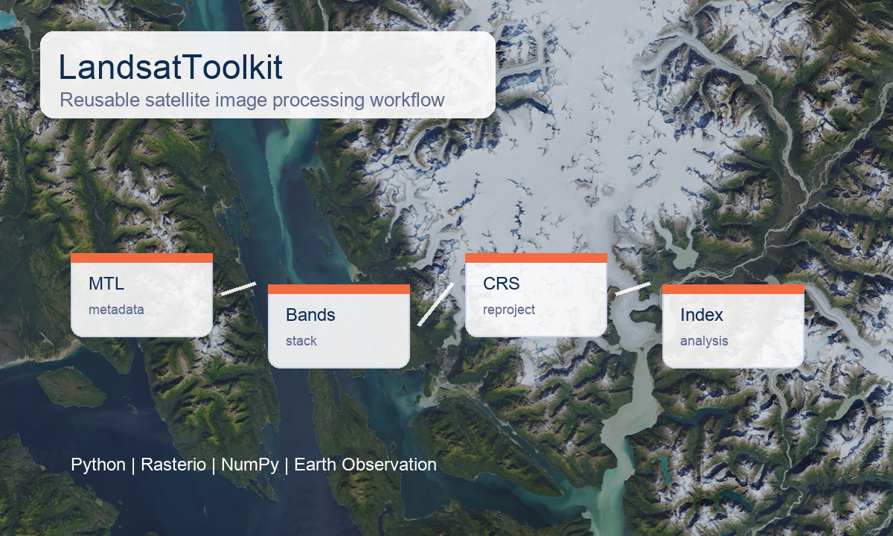
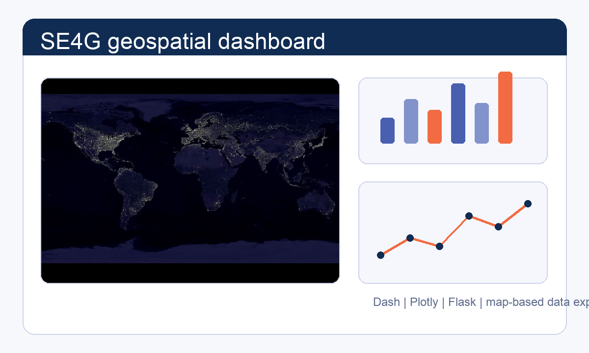

Politecnico di Milano MSc Geoinformatics EngineeringRecruiter Summary
Technical work I can contribute as a junior candidate.
I turn spatial datasets into analysis-ready layers, model features, dashboards, and documented Python workflows. My work sits between GIS operations, raster/vector data processing, and applied machine-learning experiments.
Location
Karlsruhe, Baden-Wurttemberg, Germany
Education
MSc Geoinformatics Engineering, completed
Positioning
Junior GIS / Geospatial Data
Target Roles
Recruiter-friendly roles that match the profile.
Junior GIS Analyst
Geospatial Data Analyst
Geoinformatics Engineer
Remote Sensing Analyst
Spatial Data Analyst
GIS Developer (Python)
Junior Python GIS Developer
Available For
- Junior GIS positions
- Graduate roles
- Geospatial analyst roles
- Research assistant positions
- Germany-based opportunities
- Hybrid or remote opportunities
Trust Signals
Completed MSc, KIT research exposure, and exchange experience in Germany.
Profile
An applied geoinformatics profile, not a generic developer portfolio.
I am most interested in work where maps, data quality, spatial reasoning, and reproducible code meet. My background combines geoinformatics coursework, exchange study in Germany, applied research support, and portfolio projects that show how I approach spatial data problems step by step.
My MSc thesis, Inferring Map Generalization Operations from User Prompts, is a good example of that intersection: cartographic generalization, natural language prompts, feature engineering, and model evaluation in one geospatial workflow.
Services & Strengths
Applied geospatial support with clear technical evidence.
GIS plus Python
Comfortable moving between spatial concepts, GIS tools, and Python-based processing.
Applied research exposure
Experience supporting research workflows at KIT with energy, mobility, dashboard, and map-related work.
Earth observation mindset
Project work includes satellite data processing, raster analysis, environmental indicators, and WebGIS outputs.
Geospatial ML intersection
Thesis and projects connect spatial features, text prompts, classification, evaluation, and model workflows.
International academic path
MSc study in Italy with exchange experience in Germany and a surveying engineering foundation.
Experience
Junior-level applied research, GIS analysis, and web support.

GIS & Data Analyst, Research Assistant
- Built Python-based pipelines for energy and mobility datasets used in applied research workflows.
- Performed spatial analyses on mobility and energy data to support decarbonization modeling and planning research.
- Created dashboard views with map integration to make research data easier to inspect and communicate.
Tools: Python, spatial data pipelines, GIS analysis, dashboards

Web Developer, Research Assistant
- Supported web application development for digital research and innovation workflows with attention to usability.
- Assisted VR/AR project work by preparing interactive components and visual outputs.
- Contributed map-related interface elements and geospatial visualizations for digital applications.
Tools: Web applications, JavaScript, VR/AR support, geospatial visualization
Intern
- Supported surveying, photogrammetry, and GIS tasks in a practical project environment.
- Assisted data collection and spatial data preparation for technical project work.
- Used AutoCAD and GIS tools to prepare and process geospatial project data.
Tools: AutoCAD, GIS tools, surveying, photogrammetry
Skills
Compact technical profile for GIS and geospatial data roles.
Programming
Python, SQL, JavaScript, C++
GIS & Geospatial
QGIS, ArcGIS, GeoPandas, PostGIS, Google Earth Engine
Data & ML
Scikit-learn, PyTorch, Pandas, NumPy, Machine Learning
Visualization
Dash, Plotly, Matplotlib, dashboards
Web & APIs
Flask, REST APIs, HTML, CSS, JavaScript
Project Library
Projects grouped by geospatial, software, AI, and surveying capabilities.
Filter projects by capability area. Several projects intentionally appear in multiple groups.

MSc Thesis
GitHub
Inferring Map Generalization Operations from User Prompts
Built a machine-learning workflow that links user prompts to cartographic generalization operations for more structured map-design decisions. GitHub repository.
- Problem: Connect human map-editing requests with the operations needed to generalize map features.
- Method: Used text embeddings, geometric features, model training, and evaluation in a Python pipeline.
Tech Stack: Python, Scikit-learn, GeoPandas, Shapely
Demonstrates: Geospatial ML, feature engineering, cartographic reasoning
Raster Simulation
GitHub
LayerAlterator
Built a Python tool for controlled raster modification with vector masks, reusable processing logic, and geospatial validation checks. GitHub repository.
- Problem: Modify raster layers in a repeatable way while respecting spatial masks and coordinate systems.
- Method: Implemented mask-based raster operations with CRS consistency, validation, and modular Python functions.
Tech Stack: Python, Rasterio, GeoPandas, NumPy
Demonstrates: Raster processing, geodata engineering, Python tooling

Earth Observation
GitHub
LandsatToolkit
Built a reusable Python toolkit for Landsat satellite image processing, enabling metadata extraction, band operations, reprojection, and environmental analysis workflows. GitHub repository.
- Problem: Make common Landsat processing steps easier to reuse across Earth observation analyses.
- Method: Packaged metadata handling, band processing, reprojection, and index-oriented workflows in Python.
Tech Stack: Python, Rasterio, NumPy, Remote Sensing
Demonstrates: Earth observation, reusable Python packages, raster workflows
WebGIS
GitHub
AI-Based Landslide Susceptibility Mapping
Developed a GIS and machine-learning workflow for landslide susceptibility mapping, combining terrain, infrastructure, and remote sensing data. GitHub repository.
- Problem: Assess landslide susceptibility using spatial evidence from terrain, infrastructure, and environmental layers.
- Method: Combined GIS layers, remote sensing inputs, machine-learning steps, and WebGIS communication.
Tech Stack: GIS, Remote Sensing, JavaScript, WebGIS
Demonstrates: Spatial modeling, WebGIS communication, environmental analysis

Dashboard
GitHub
SE4G Geospatial Data Visualization Dashboard
Built an interactive dashboard for geospatial data exploration, combining maps, charts, API integration, and user-driven analysis in a practical data application. GitHub repository.
- Problem: Make geospatial datasets easier to inspect through a browser-based analytical interface.
- Method: Combined maps, charts, API integration, and dashboard interactions in a Python web application.
Tech Stack: Python, Dash, Plotly, Flask
Demonstrates: Dashboard development, geospatial visualization, data communication
Deep Learning
GitHub
DL4CVRS Vehicle Detection Model
Compared CNN and pretrained ResNet18 image-classification models with training, evaluation, metrics, normalization, and error analysis. GitHub repository.
Demonstrates: Computer vision workflow, model comparison, evaluation basics
Remote Sensing
GitHub
EOAdvanced Water Area Analysis in Eastern Venice
Analyzed water-area changes using satellite data, NDWI-based indicators, maps, and statistical visualizations for 2021 to 2024. GitHub repository.
Demonstrates: Earth observation, NDWI analysis, temporal mapping
Web Development
GitHub
PoliYoga Responsive Web Application
Contributed to a responsive web platform for a yoga academy with frontend, UX, database-related features, profiles, activities, and dynamic content. GitHub repository.
Demonstrates: Web application basics, UX collaboration, database-backed features
Surveying
Engineering Surveying
Surveying work at the University of Tehran campus using total station data collection and plan preparation.
Demonstrates: Surveying fundamentals, field data, plan preparation
Surveying
Levelling Project
Measured height differences with classical levelling methods, error control, and technical documentation.
Demonstrates: Measurement discipline, quality control, documentation
Engineering Design
Road Planning with Civil 3D
Designed a road connection using AutoCAD Civil 3D, route geometry, longitudinal profiles, and cut-and-fill volumes.
Demonstrates: Engineering design tools, terrain reasoning, volume calculation
Point Cloud
3D Laser Scanning
Captured and processed point-cloud data from a building floor to support digital 3D model preparation.
Demonstrates: Point-cloud workflow, 3D data capture, surveying technology
Process
A structured workflow from spatial question to usable product.
I approach geospatial work like a product system: define the decision, validate the data, design the workflow, and ship outputs that can be inspected and reused.
Discovery
Clarify the spatial question, users, constraints, available datasets, and success criteria.
Strategy
Choose the analysis path, data model, tools, validation checks, and communication format.
Design
Shape the map, dashboard, workflow, or model output around hierarchy and interpretability.
Development
Build clean Python, GIS, WebGIS, or dashboard workflows with reusable and documented logic.
Delivery
Package results with clear documentation, visual outputs, and next-step recommendations.
Social Proof
Credibility built through academic, research, and project evidence.
Education
Geoinformatics, remote sensing, GIS, and surveying foundations.
MSc Geoinformatics Engineering
Sep 2023 - Mar 2026 | Completed | Grade: 102 / 110, approx. 1.5
Exchange student in geodesy at the University of Bonn and in remote sensing and geoinformation at KIT.
Thesis: Inferring Map Generalization Operations from User Prompts
Relevant coursework: Geographic Information Systems, Machine Learning, Databases, Earth Observation, Geospatial Data Analysis, Geospatial Processing
BSc Surveying Engineering
Sep 2018 - Jul 2022 | Grade: 16.5 / 20, approx. 1.9
Thesis: Application of GIS and Big Data in Smart Cities
Relevant coursework: Surveying, Photogrammetry, Remote Sensing, Geographic Information Systems, Spatial Analysis, Geodesy
Contact
Open to junior GIS and geospatial data roles in Germany.
Interested in junior GIS, geospatial analysis, or Python-based spatial roles? Feel free to connect or reach out.
donyadideganamir@gmail.com +49 176 2477 0243 GitHub: AmirDonyadide LinkedIn: amirhossein-donyadidegan
English: fluent
German: intermediate
Italian: intermediate
Driving license: Class B